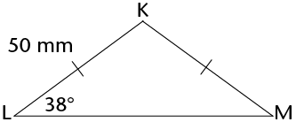
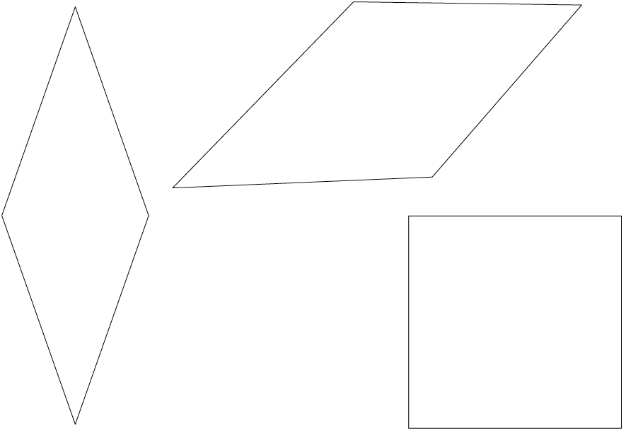

<div class="container">
  <div id="contents" class="col-md-12 main-content"><h1 xmlns="http://www.w3.org/1999/xhtml" id="toc-id-18">Geometry of shapes</h1>

   <p xmlns="http://www.w3.org/1999/xhtml" class="Body-opener-no-indent">In this chapter, you will
    learn more about different kinds of triangles and
    quadrilaterals, and their properties. You will explore shapes
    that are congruent and shapes that are similar. You will also
    use your knowledge of the properties of 2D shapes in order to
    solve geometric problems.</p>

 <h2 xmlns="http://www.w3.org/1999/xhtml" id="toc-id-19">Types of triangles</h2>

    <p xmlns="http://www.w3.org/1999/xhtml" class="Body-no-indent">By now, you know that a triangle is a
    closed 2D shape with three straight sides. We can classify or
    name different types of triangles according to the lengths of
    their sides and according to the sizes of their angles.</p>

    <h3 xmlns="http://www.w3.org/1999/xhtml" class="Head-investigation">Naming triangles according to their sides</h3>

 <ol xmlns="http://www.w3.org/1999/xhtml"><li class="Body-investigation"> Match the name of each type of
    triangle with its correct description.

    <table id="table-38" class="No-Table-Style"><tbody><tr class="Row-Column-7"><td>
            <p class="Table-header-left">Name of triangle</p>
          </td>

          <td>
            <p class="Table-header-left">Description of
            triangle</p>
          </td>
        </tr><tr class="Row-Column-7"><td>
            <p class="Table-text-left" xml:lang="en-GB">Isosceles
            triangle</p>
          </td>

          <td>
            <p class="Table-text-left" xml:lang="en-GB">All the
            sides of a triangle are equal.</p>
          </td>
        </tr><tr class="Row-Column-7"><td>
            <p class="Table-text-left" xml:lang="en-GB">Scalene
            triangle</p>
          </td>

          <td>
            <p class="Table-text-left" xml:lang="en-GB">None of the
            sides of a triangle are equal.</p>
          </td>
        </tr><tr class="Row-Column-7"><td>
            <p class="Table-text-left" xml:lang="en-GB">Equilateral
            triangle</p>
          </td>

          <td>
            <p class="Table-text-left" xml:lang="en-GB">Two sides
            of a triangle are equal.</p>
          </td>
        </tr></tbody></table></li>
  
    <li class="Body-investigation"> Name each type of triangle by
    looking at its sides.

    <p class="Body-investigation"><span></span> </p>
    <hr/></li>
</ol><h3 xmlns="http://www.w3.org/1999/xhtml" class="Head-investigation">Naming triangles according to their angles</h3>

    <p xmlns="http://www.w3.org/1999/xhtml" class="Body-no-indent">Remember the following types of
    angles:</p>

    <p xmlns="http://www.w3.org/1999/xhtml" class="Body-no-indent"><span></span> </p>

    <p xmlns="http://www.w3.org/1999/xhtml" class="Body-no-indent">Study the following triangles; then
    answer the questions:</p>

    <p xmlns="http://www.w3.org/1999/xhtml" class="Body-no-indent para-style-override-30">
    <span></span> </p>

 <ol xmlns="http://www.w3.org/1999/xhtml"><li class="Body-investigation-spaced"> Are all the angles of a
    triangle always equal?
    <hr/></li>
  
    <li class="Body-investigation-spaced"> When a triangle has an
    obtuse angle, it is called an ____________ triangle.
        <hr/></li>
    <li class="Body-investigation-spaced"> When a triangle has
    only acute angles, it is called an ____________ triangle.
        <hr/></li>
    <li class="Body-investigation-spaced"> When a triangle has an
    angle equal to ______, it is called a
    right-angled triangle.
        <hr/></li>
  </ol>
  <h3 xmlns="http://www.w3.org/1999/xhtml" class="Head-investigation">Investigating the angles and sides of triangles</h3>

 <ol xmlns="http://www.w3.org/1999/xhtml"><li class="ques-a--2-space-below">
      <ol><li> What is the sum of the
    interior angles of a triangle?
    <hr/></li>
  
  <li class="ques-a-"> Can a triangle have two right
    angles?
     Explain your answer.<hr/></li>
        </ol></li>

   <li class="ques-a-"> Can a triangle have more than one obtuse
    angle? Explain your answer.
        <hr/>      <div class="aside">
      <p class="Body-box-no-indent">If you cannot work out the
      answers in 1(b) and (c), try to construct the triangles to
      find the answers.</p>
    </div>
    </li>

  <li class="Body-investigation"> Look at the triangles below.
    The arcs show which angles are equal.

      <div class="frame-14"></div>

 <ol><li class="ques-a-"> \( \triangle ABC\) is an equilateral
    triangle. What do you notice about its angles?
    <hr/></li>
    <li class="ques-a-"> \({\triangle}\text{FEM}\) is an isosceles triangle.
    What do you notice about its angles?
    <hr/></li>
    <li class="ques-a--2-space-below"> \({\triangle}\text{JKL}\) is a
    right-angled triangle. Is its longest side opposite the
    90° angle?
    <hr/></li>
    <li class="ques-a-"> Construct any three right-angled
    triangles on a sheet of paper. Is the longest side always
    opposite the 90° angle?
    <hr/></li>
</ol>
</li>
</ol>


    <div xmlns="http://www.w3.org/1999/xhtml" class="note">
      <p class="Body-content-no-indent">Properties of
      triangles:</p>
      
      <ul><li>The <b>sum of the interior angles</b> of a triangle is 180°. </li>
	<li>An <b>equilateral triangle</b> has all sides equal and each interior angle is equal to 60°.</li>
	  <li>An <b>isosceles triangle</b> has two equal sides and the angles opposite the equal sides are equal. </li>
<li> A <b>scalene triangle</b> has no sides equal. </li>
<li>A <b>right-angled triangle</b> has a right angle (90°).</li>
  <li>	 An <b>obtuse triangle</b> has one obtuse angle (between 90° and 180°).</li>
<li>	 An <b>acute triangle</b> has three acute angles (&lt;90°).</li>
</ul></div>

    <div xmlns="http://www.w3.org/1999/xhtml" class="aside">
      <p class="Body-box-no-indent"><b>Interior angles</b> are the
      angles inside a closed shape, not the angles outside of
      it.</p>
    </div>

    <h2 xmlns="http://www.w3.org/1999/xhtml" id="toc-id-20">Unknown angles and sides of triangles</h2>

    <p xmlns="http://www.w3.org/1999/xhtml" class="Body-no-indent">You can use what you know about
    triangles to obtain other information. When you work out new
    information, you must always give reasons for the statements
    you make.</p>

    <p xmlns="http://www.w3.org/1999/xhtml" class="Body">Look at the examples below of working out
    unknown angles and sides when certain information is given. The
    reason for each statement is written in square brackets.</p>

    <p xmlns="http://www.w3.org/1999/xhtml" class="Body-no-indent"><span></span> </p>

    <p xmlns="http://www.w3.org/1999/xhtml" class="Body-no-indent"> \( \hat{A} = \hat{B} + \hat{C} = 60^{\circ}\) [Angles in an
    equilateral \({\triangle}\) = 60°]</p>

    <p xmlns="http://www.w3.org/1999/xhtml" class="Body-no-indent">DE = DF [Given]</p>

    <p xmlns="http://www.w3.org/1999/xhtml" class="Body-no-indent"> \( \hat{E} = \hat{F}\) [Angles opposite the equal sides of an
    isosceles \triangle} are equal]</p>

    <p xmlns="http://www.w3.org/1999/xhtml" class="Body-no-indent para-style-override-1">  \(\hat{J} = 55^{\circ}\) [The sum of the interior
    angles of a \({\triangle} = 180^{\circ}\); so \( \hat{J} = 180^{\circ} - 40^{\circ} - 85^{\circ} \)]</p>

    <p xmlns="http://www.w3.org/1999/xhtml" class="Body-no-indent">You can shorten the following reasons
    in the ways shown:</p>

    <ul xmlns="http://www.w3.org/1999/xhtml"><li class="Body-bullet"> Sum of interior angles (∠s) of a
      triangle (\triangle}) = 180°: <b>Interior ∠s of \({\triangle}\)</b></li>

      <li class="Body-bullet"> Isosceles triangle has 2 sides and 2 angles equal: <b>Isosceles
      \({\triangle}\)</b></li>

      <li class="Body-bullet"> Equilateral triangle has 3 sides and 3 angles equal:
      <b>Equilateral \({\triangle}\)</b></li>

      <li class="Body-bullet para-style-override-7"> Angles
      forming a straight line = 180°: <b>Straight
      line</b></li>
    </ul><h3 xmlns="http://www.w3.org/1999/xhtml" class="Head-investigation">Working out unknown angles and sides</h3>

    <p xmlns="http://www.w3.org/1999/xhtml" class="Body-no-indent">Find the sizes of unknown angles and
    sides in the following triangles. Always give reasons for every
    statement.</p>

 <ol xmlns="http://www.w3.org/1999/xhtml"><li class="Body-investigation"> What is the size of \(\hat{C}\)?

            <p class="Body-investigation"><span></span> </p>

            \( \begin{align} \hat{A} + \hat{B} + \hat{C} &amp;= \text{______}
\text{[Interior } \angle\text{s of a }{\triangle}] \\ \ 50 ° +
\text{______} + \hat{C} &amp;= \text{______} \\ 
	    145 ° + \hat{C} &amp;= \text{______} \\ \hat{C} &amp;= \text{______}
-145 ° \\ \hat{C} &amp;= \text{______} \end{align} \)
            
	  </li>
	  
            <li class="Body-investigation"> Determine the size of \(\hat{P}\).

            <p class="Body-investigation"><span></span> </p>
	    <hr/></li>

            <li class="ques-a-">
	      <ol><li> What is the length of
            KM
	      <hr/></li>

            <li class="ques-a-"> Find the size of \(\hat{K}\).
	      	      <hr/>            <p class="ques-a-"><span></span> </p></li>


	  </ol></li>
	
           <li class="Body-investigation"> What is the size of \(\hat{S}\)?

            <p class="Body-investigation"><span></span> </p>
	    <hr/></li>
	    
            <li class="ques-a-">
	      <ol><li>Find CB.
		  <hr/></li>

            <li class="ques-a-"> Find \(\hat{C}\) if \(\hat{A} = 50^{\circ}\).
<hr/>            <p class="ques-a-"><span></span> </p></li>
	    

	  </ol></li>
	    
         <li class="ques-a-">
	   <ol><li> Find DF.
	       		  <hr/></li>

            <li class="ques-a-"> Find \(\hat{E}\) if \(\hat{D} = 50^{\circ}\).
<hr/>            <p class="ques-a-"><span></span> </p></li>


	  </ol></li>
      </ol>
      <h3 xmlns="http://www.w3.org/1999/xhtml" class="Head-investigation">Working out more unknown angles and sides</h3>

 <ol xmlns="http://www.w3.org/1999/xhtml"><li class="Body-investigation"> Calculate the size of \(\hat{X}\) and \(\hat{Z}\).

            <p class="Body-investigation"><span></span> </p>
	    <hr/></li>

            <li class="Body-investigation"> Calculate the size of
            \(x\).

            <p class="Body-investigation"><span></span> </p>
	    <hr/></li>

            <li class="Body-investigation"> KLM is a straight
            line. Calculate the size of \(x\) and \(y\).

            <p class="Body-investigation para-style-override-9">
            <span></span> </p>
	    <hr/></li>
           
            <li class="Body-investigation"> Angle \(b\) <span>and an angle with size 130°
            form a straight angle. Calculate the size of</span>
            \(a\) and \(b\).

            <p class="Body-investigation para-style-override-32">
            <span></span> </p>
	    <hr/></li>
	  
          <li class="Body-investigation"> \(m\) and \(n\)
            form a straight angle. Calculate the size of \(m\)
            and \(n\).

            <p class="Body-investigation para-style-override-32">
            <span></span> </p>
	  <hr/></li>
	
            <li class="Body-investigation"> BCD is a straight line
            segment. Calculate the size of \(x\).

            <p class="Body-investigation para-style-override-33">
            <span></span> </p>
	  <hr/></li>
         
            <li class="Body-investigation"> Calculate the size of
            \(x\) and then the size of \( \hat{H}\).

            <p class="Body-investigation para-style-override-9">
            <span></span> </p>
	  <hr/></li>
	    
         <li class="Body-investigation"> Calculate the size of \(\hat{N}\).

            <p class="Body-investigation para-style-override-35">
            <span></span> </p>
         	  <hr/></li>
	    
            <li class="Body-investigation"> DNP is a straight
            line. Calculate the size of \(x\) and of
            \(y\).
	    
            <p class="Body-investigation para-style-override-36">
            <span></span> </p>
      	  <hr/></li>
	  </ol><h2 xmlns="http://www.w3.org/1999/xhtml" id="toc-id-21">Types of quadrilaterals and their properties</h2>

    <p xmlns="http://www.w3.org/1999/xhtml" class="Body-no-indent">A quadrilateral is a figure with four
    straight sides which meet at four vertices. In many
    quadrilaterals all the sides are of different lengths and all
    the angles are of different sizes.</p>

    <p xmlns="http://www.w3.org/1999/xhtml" class="Body">You have previously worked with these types of
    quadrilaterals, in which some sides have the same lengths, and
    some angles may be of the same size.</p>

    <div xmlns="http://www.w3.org/1999/xhtml" class="frame-14"></div>

    <div xmlns="http://www.w3.org/1999/xhtml" class="note">
      <p class="Body-content-no-indent">parallelograms</p>

      <p class="Body-content-no-indent">rectangles</p>

      <p class="Body-content-no-indent">kites</p>

      <p class="Body-content-no-indent">rhombuses</p>

      <p class="Body-content-no-indent">squares</p>

      <p class="Body-content-no-indent">trapeziums</p>
    </div>

    <h3 xmlns="http://www.w3.org/1999/xhtml" class="Head-investigation">The properties of different types of quadrilaterals</h3>

 <ol xmlns="http://www.w3.org/1999/xhtml"><li class="Body-investigation-hanging"> In each question
    below, different examples of a certain type of quadrilateral
    are given. In each case identify which kind of quadrilateral it
    is. Describe the properties of each type by making statements
    about the lengths and directions of the sides and the sizes of
    the angles of each type. You may have to take some measurements
    to be able to do this.
      <ol><li class="Body-no-indent">

    <div class="frame-14"></div>
    <hr/><p class="Body-no-indent"><b><span></span> </b></p>
   <hr/></li>
   
    <li class="Body-no-indent">


    <p class="Body-no-indent para-style-override-7">
    <b><span></span> </b></p>
    <hr/></li>
 
    <li class="Body-no-indent">

    <div class="frame-14"></div>
    <hr/><p class="Body-no-indent"><b><span></span> </b></p>
    <hr/></li>
  
    <li class="Body-no-indent">

    <p class="Body-no-indent"><b><span></span> </b></p>
    <hr/></li>
  
    <li class="Body-no-indent">

    <p class="Body-no-indent"><b><span></span> </b></p>
    <hr/></li>
  
    <li class="Body-no-indent">

    <div class="frame-14"></div>
    <hr/></li>
</ol></li>

    <li class="Body-investigation-hanging"> Use your completed
    lists and the drawings in question 1 to determine if the
      following statements are true (T) or false (F).
	<ol><li class="ques-a--2-space-below"> A rectangle is a
    parallelogram.
    <hr/></li>
    <li class="ques-a--2-space-below"> A square is a
    parallelogram.
    <hr/></li>
    <li class="ques-a--2-space-below"> A rhombus is a
    parallelogram.
    <hr/></li>
    <li class="ques-a--2-space-below"> A kite is a
    parallelogram.
    <hr/></li>
    <li class="ques-a--2-space-below"> A trapezium is a
    parallelogram.
    <hr/></li>
    <li class="ques-a--2-space-below"> A square is a rhombus.
    <hr/></li>
    <li class="ques-a--2-space-below"> A square is a
    rectangle.
    <hr/></li>
    <li class="ques-a--2-space-below"> A square is a kite.
    <hr/></li>
    <li class="ques-a--2-space-below"> A rhombus is a kite.
    <hr/></li>
    <li class="ques-a--2-space-below"> A rectangle is a
    rhombus.
    <hr/></li>
    <li class="ques-a--2-space-below"> A rectangle is a
    square.
    <hr/></li>
    </ol></li>
  </ol><div xmlns="http://www.w3.org/1999/xhtml" class="aside">
      <p class="Body-box-no-indent">A <b>convention</b> is
      something (such as a definition or method) that most people
      agree on, accept and follow.</p>
    </div>

    <div xmlns="http://www.w3.org/1999/xhtml" class="note">
      <p class="Body-content-no-indent">If a quadrilateral has
      <i>all</i> the properties of another quadrilateral, you can
      define it in terms of the other quadrilateral, as you have
      found above.</p>
    </div>

 <ol xmlns="http://www.w3.org/1999/xhtml"><li value="3" class="Body-investigation"> Here are some conventional
    definitions of quadrilaterals:

    <ul><li class="Body-bullet-Left-indent"><span class="char-style-override-5"/> A
      <b>parallelogram</b> is a quadrilateral with two opposite
      sides parallel.</li>

      <li class="Body-bullet-Left-indent"><span class="char-style-override-5"/> A
      <b>rectangle</b> is a parallelogram that has all four angles
      equal to 90°.</li>

      <li class="Body-bullet-Left-indent"><span class="char-style-override-5"/> A
      <b>rhombus</b> is a parallelogram with all four sides
      equal.</li>

      <li class="Body-bullet-Left-indent"><span class="char-style-override-5"/> A
      <b>square</b> is a rectangle with all four sides equal.</li>

      <li class="Body-bullet-Left-indent"><span class="char-style-override-5"/>
      A<b>trapezium</b> is a quadrilateral with one pair of
      opposite sides parallel.</li>

      <li class="Body-bullet-Left-indent"><span class="char-style-override-5"/> A
      <b>kite</b> is a quadrilateral with two pairs of adjacent
      sides equal.</li>
    </ul><p class="Body-investigation">Write down other definitions that
    work for these quadrilaterals.</p>
    <ol><li class="ques-a-"> Rectangle:
    <hr/></li>

    <li class="ques-a-"> Square:
    <hr/></li>

    <li class="ques-a-"> Rhombus:
    <hr/></li>

    <li class="ques-a-"> Kite:
    <hr/></li>

    <li class="ques-a-"> Trapezium:
    <hr/></li>
</ol></li>
</ol><h2 xmlns="http://www.w3.org/1999/xhtml" id="toc-id-22">Unknown angles and sides of quadrilaterals</h2>

    <h3 xmlns="http://www.w3.org/1999/xhtml" class="Head-investigation-after-B-head">Finding unknown angles and sides</h3>

    <p xmlns="http://www.w3.org/1999/xhtml" class="Body-no-indent">Find the length of all the <b>unknown
    sides</b> and <b>angles</b> in the following quadrilaterals.
    Give reasons to justify your statements. (Also recall that the
    sum of the angles of a quadrilateral is 360°.)</p>

 <ol xmlns="http://www.w3.org/1999/xhtml"><li>
            <p class="Body-investigation"><span></span> </p>
	  </li>
	  
             <li>
            <p class="Body-investigation"><span></span> </p>
	  </li>
	  
            <li class="Body-investigation"> ABCD is a kite.
            <p class="Body-investigation"><span></span> </p>
	  </li>
	  
            <li class="Body-investigation"> The perimeter of RSTU
            is 23 cm.

            <p class="Body-investigation"><span></span> </p>
	  </li>

            <li class="Body-investigation"> PQRS is a rectangle
            and has a perimeter of 40 cm.

            <p class="Body-investigation para-style-override-9">
            <span></span> </p>
	  </li>
	</ol><h2 xmlns="http://www.w3.org/1999/xhtml" id="toc-id-23">Congruency</h2>

    <h3 xmlns="http://www.w3.org/1999/xhtml" class="Head-investigation-after-B-head">What is congruency?</h3>


    <div xmlns="http://www.w3.org/1999/xhtml" class="frame-14"></div>

 <ol xmlns="http://www.w3.org/1999/xhtml"><li class="Body-investigation"> \( \triangle ABC\) is reflected in
    the vertical line (mirror) to give  \(\triangle KLM\).
    
    <p class="Body-investigation">Are the sizes and shapes of the
    two triangles exactly the same?</p>
    <hr/></li>
      
    <li class="Body-investigation"> \({\triangle}\text{MON}\) is rotated
    90° around point F to give you \({\triangle}\text{TUE}\).

    <p class="Body-investigation">Are the sizes and shapes of
    \({\triangle}\text{MON}\) and \({\triangle}\text{TUE}\) exactly the same?</p>
    <hr/></li>
  
    <li class="Body-investigation"> Quadrilateral ABCD is
    translated 6 units to the right and 1 unit down to give
    quadrilateral XRZY.

    <p class="Body-investigation">Are ABCD and XRZY exactly the
    same?</p>
    <hr/></li>
</ol><p xmlns="http://www.w3.org/1999/xhtml" class="Body-no-indent">In the previous activity, each of the
    figures was transformed (reflected, rotated or translated) to
    produce a second figure. The second figure in each pair has
    <b>the same angles, side lengths, size and area</b> as the
    first figure. The second figure is thus an <b>accurate copy</b>
    of the first figure.</p>
    
    <div xmlns="http://www.w3.org/1999/xhtml" class="note">
      <p class="Body-content-no-indent">When one figure is an image
      of another figure, we say that the two figures are
      <b>congruent</b>.</p>
    
    <div class="aside">
      <p class="Body-box-no-indent">The word <b>congruent</b> comes
      <span>from the Latin word</span> <span class="Body-box-italic">congruere</span><span>,</span> which means
      "to agree". Figures are congruent if they match up perfectly
      when laid on top of each other.</p>
    </div>

      <p class="Body-content-no-indent">The symbol for congruent
      is: \(\equiv\)</p>
    </div>

    <p xmlns="http://www.w3.org/1999/xhtml" class="Head-C">Notation of congruent figures</p>

    <p xmlns="http://www.w3.org/1999/xhtml" class="Body-no-indent">When we name shapes that are
    congruent, we name them so that the matching, or corresponding,
    angles are in the same order. For example, in
    \({\bf{\triangle}\text{ABC}}\) and \({\bf{\triangle}\text{KLM}}\) on the previous
    page:</p>

    <p xmlns="http://www.w3.org/1999/xhtml" class="Body-no-indent"> \(\hat{A}\) is congruent to (matches and is
      equal to)  \(\hat{K}\).</p>
   <p xmlns="http://www.w3.org/1999/xhtml" class="Body-no-indent"> \(\hat{B}\) is congruent to \(\hat{M}\).</p>
         <p xmlns="http://www.w3.org/1999/xhtml" class="Body-no-indent"> \(\hat{C}\) is congruent to \(\hat{L}\).</p>
<div xmlns="http://www.w3.org/1999/xhtml" class="note">
    <p class="Body-no-indent">We therefore use this notation:
\({\bf{\triangle}\text{ABC}} \equiv {\bf{\triangle}\text{KML}}\).</p>
</div> <div xmlns="http://www.w3.org/1999/xhtml" class="aside">
      <p class="Body-box-no-indent">We cannot assume that, when the
      angles of polygons are equal, the polygons are congruent. You
      will learn about the conditions of congruence in Grade 9.</p>
    </div>
    
    <p xmlns="http://www.w3.org/1999/xhtml" class="Body-no-indent">Similarly for the other pairs of
    figures on the previous page: \({\bf{\triangle}\text{MON}} \equiv {\bf{\triangle}\text{ETU}}\) and \({\bf ABCD} \equiv {\bf XRZY}\).</p>

    <p xmlns="http://www.w3.org/1999/xhtml" class="Body-no-indent">The notation of congruent figures
    also shows which sides of the two figures correspond and are
    equal. For example, \({\triangle}\text{ABC} \equiv {\triangle}\text{KML}\) shows that:</p>

    <p xmlns="http://www.w3.org/1999/xhtml" class="Body-no-indent">\(\text{AB = KM, BC = ML and AC = KL}\)</p>

    <p xmlns="http://www.w3.org/1999/xhtml" class="Body-no-indent-space-below">The incorrect notation
      \({\triangle}\text{ABC} \equiv {\triangle}\text{KLM}\) will show the following incorrect information:</p>
    <p xmlns="http://www.w3.org/1999/xhtml" class="Body-no-indent">\( \hat{B} = \hat{L}, ~\hat{C} = \hat{M},~\text{AB = KL, AC = KM}\)</p>

    <h3 xmlns="http://www.w3.org/1999/xhtml" class="Head-investigation">Identifying congruent angles and sides</h3>

    <p xmlns="http://www.w3.org/1999/xhtml" class="Body-no-indent">Write down which angles and sides are
    equal between each pair of congruent figures.</p>
   
    <ol xmlns="http://www.w3.org/1999/xhtml"><li> \({\triangle}\text{PQR} \equiv
            {\triangle}\text{UCT}\)
    <hr/></li>
            <li class="Body-investigation"> \({\triangle}\text{KLM} \equiv
            {\triangle}\text{UWC}\)
    <hr/></li>
            <li class="Body-investigation">\( {\triangle}\text{GHI}\equiv
            {\triangle}\text{QRT}\)
    <hr/></li>
            <li class="Body-investigation"> \({\triangle}\text{KJL}\equiv
             {\triangle}\text{POQ}\)
             <hr/></li>
</ol><h2 xmlns="http://www.w3.org/1999/xhtml" id="toc-id-24">Similarity</h2>

    <p xmlns="http://www.w3.org/1999/xhtml" class="Body-no-indent">In Grade 7, you learnt that two
    figures are <b>similar</b> when they have the <b>same shape</b>
    (their angles are equal) but they may be <b>different
    sizes</b>. The sides of one figure are proportionally longer or
    shorter than the sides of the other figure; that is, the length
    of each side is multiplied or divided by the same number. We
    say that one figure is an enlargement or a reduction of the
    other figure.</p>

    <h3 xmlns="http://www.w3.org/1999/xhtml" class="Head-investigation">Checking for similarity</h3>

 <ol xmlns="http://www.w3.org/1999/xhtml"><li class="Body-investigation"> Look at the rectangles below
    and answer the questions that follow.

    <p class="ques-a-"><span></span> </p>
    <ol><li class="ques-a--2-space-below"> Look at rectangle 1 and
    ABCD:

    <p class="ques-a--2-space-below">How many times is FH longer
    than BC?</p>
    <hr/><p class="ques-a--2-space-below">How many times is GF longer
    than AB?</p>
    <hr/></li>
    <li class="ques-a--2-space-below"> Look at rectangle 2 and
    ABCD:

    <p class="ques-a--2-space-below">How many times is IL longer
    than BC?</p>
    <hr/><p class="ques-a--2-space-below">How many times is LM longer
    than CD?</p>
    <hr/></li>
    <li class="ques-a-"> Is rectangle 1 or rectangle 2 an
    enlargement of rectangle ABCD? Explain your answer.
    <hr/></li>
  </ol></li>
    <li class="Body-investigation"> Look at the triangles below
    and answer the questions that follow.

    <p class="Body-investigation para-style-override-32">
    <span></span> </p>
    <ol><li class="ques-a--2-space-below"> How many times is:

    <ul><li class="Body-bullet-Left-indent para-style-override-37">
         FG
        longer than BC?
        <hr/></li>
      
 <li> HF longer than AB?
        <hr/></li>

      <li class="Body-bullet-Left-indent para-style-override-37">  HG
        longer than AC?
        <hr/></li>
      
      <li> IK shorter than BC?
        <hr/></li>

      <li class="Body-bullet-Left-indent para-style-override-38">
         JI
        shorter than AB?
        <hr/></li>
      
      <li> JK shorter than AC?
        <hr/></li>
    </ul></li>
  
    <li class="ques-a-"> Is \({\triangle}\text{HFG}\) an enlargement of
    \( \triangle ABC\)? Explain your answer.
    <hr/></li>
    <li class="ques-a-"> Is \({\triangle}\text{JIK}\) a reduction of
    \( \triangle ABC\)? Explain your answer.
    <hr/></li>
</ol></li>
</ol><p xmlns="http://www.w3.org/1999/xhtml" class="Body-no-indent--right-1-3-indent- para-style-override-39">In
    the previous activity, rectangle KILM is an enlargement of
    rectangle ABCD. Therefore, ABCD is similar to KILM. The symbol
    for 'is similar to' is: |||. So
    we write: ABCD ||| KILM.</p>

    <p xmlns="http://www.w3.org/1999/xhtml" class="Body">The triangles on the previous page are also
    similar. \({\triangle}\text{HFG}\) is an enlargement of \( \triangle ABC\) and
    \({\triangle}\text{JIK}\) is a reduction of \( \triangle ABC\).</p>

    <p xmlns="http://www.w3.org/1999/xhtml" class="Body">In \( \triangle ABC\) and \({\triangle}\text{HFG}, ~\hat{A} = \hat{H},~\hat{B} = \hat{F}\) and \(\hat{C} = \hat{G}\). We therefore write it like this:
    \({\triangle}\text{ABC} \text{|||}
{\triangle}\text{HFG}\).</p>

    <p xmlns="http://www.w3.org/1999/xhtml" class="Body">In the same way, \({\triangle}\text{ABC} |||
    {\triangle}\text{JIK}\).</p>

  <div xmlns="http://www.w3.org/1999/xhtml" class="aside">
    <p class="Body-box-no-indent">When you enlarge or reduce a
    polygon, you need to enlarge or reduce all its sides
    proportionally, or by the same ratio. This means that you
    multiply or divide each length by the same number.</p>
  </div>
    
    <div xmlns="http://www.w3.org/1999/xhtml" class="note">
      <p class="Body-content-no-indent"><b>Similar figures</b> are
      figures that have the same angles (same shape) but are not
      necessarily the same size.</p>
    </div>

    <h3 xmlns="http://www.w3.org/1999/xhtml" class="Head-investigation">Using properties of similar and congruent figures</h3>

 <ol xmlns="http://www.w3.org/1999/xhtml"><li class="Body-investigation"> Are the triangles in each pair
    similar or congruent? Give a reason for each answer.

    <p class="Body-investigation"><span></span> </p>
    <hr/></li>
  
    <li class="Body-investigation"><a id="Anchor-22"/> Is
    \({\triangle}\text{RTU} ||| {\triangle}\text{EFG}\)? Give a reason for
    your answer.

    <div class="frame-14"></div>
    <hr/></li>

    <li class="Body-investigation"> \({\triangle}\text{PQR} |||
    {\triangle}\text{XYZ}\). Determine the length of XZ and XY.

    <div class="frame-14"></div>
    <hr/></li>

    <li class="Body-investigation"> Are the following statements
    true or false? Explain your answers.
      <ol><li class="ques-a-"> Figures that are congruent are
    similar.
    <hr/></li>

    <li class="ques-a-"> Figures that are similar are
    congruent.
    <hr/></li>

    <li class="ques-a-"> All rectangles are similar.
    <hr/></li>

    <li class="ques-a-"> All squares are similar.
    <hr/></li>
</ol></li>
</ol><div xmlns="http://www.w3.org/1999/xhtml" class="worksheet">
   <ol><li class="worksheet-text"> Study the triangles below and
    answer the following questions:
    <div class="frame-14"></div>
    
    <ol><li class="worksheet-text para-style-override-40"> Tick the
    correct answer. \( \triangle ABC\) is:

    <p class="worksheet-text para-style-override-8">☐ acute and equilateral</p>

    <p class="worksheet-text para-style-override-8">☐ obtuse and scalene</p>

    <p class="worksheet-text para-style-override-8">☐ acute and isosceles</p>

    <p class="worksheet-text">☐ right-angled and isosceles.</p>
</li>

    <li class="worksheet-text-line-spaced"> If AB = 40 mm, what
    is the length of AC?
    <hr/></li>
  
    <li class="worksheet-text-line-spaced"> If \( \hat{B}= 80^{\circ}\), what is the size of \( \hat{C}\) and of \( \hat{A}\)?
    <hr/></li>
  
    <li class="worksheet-text"> \({\triangle}\text{ABC} \equiv {\triangle}\text{FDE}\). Name all the sides in the two triangles that are
    equal to AB.
    <hr/></li>
  
    <li class="worksheet-text-line-spaced"> Name the side that is
    equal to DE.
    <hr/></li>
  
    <li class="worksheet-text"> If \( \hat{F}\) is 40°, what is the size
    of \( \hat{B}\)?
    <hr/></li>
</ol></li><li class="worksheet-text"> Look at figures JKLM and PQRS.
    (Give reasons for your answers below.)

    <p class="worksheet-text para-style-override-21">
    <span></span> </p>
    
    <ol><li class="worksheet-text-line-spaced"> What type of
    quadrilateral is JKLM?
      <hr/></li>

    <li class="worksheet-text-line-spaced"> Is JKLM ||| PQRS?
      <hr/></li>

    <li class="worksheet-text-line-spaced"> What is the size of \(\hat{L}\)?
      <hr/></li>

    <li class="worksheet-text-line-spaced para-style-override-13">
     What is the size of \(\hat{S}\)?
      <hr/></li>

    <li class="worksheet-text-line-spaced"> What is the length of
    KL?
      <hr/></li>
  
</ol></li>
  </ol></div>


  </div>
</div>